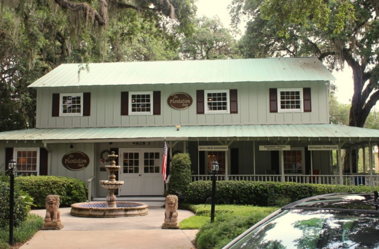
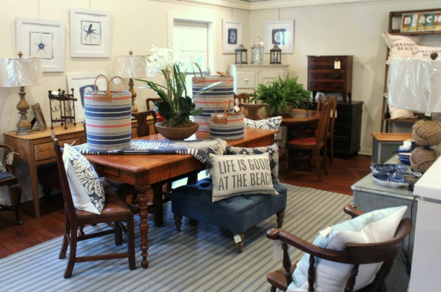
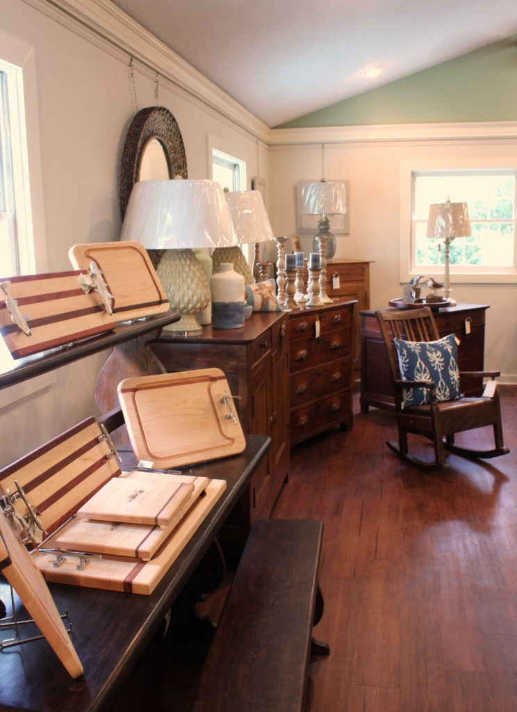

.png)
.PNG)
.PNG)
.PNG)
.PNG)
.PNG)
.JPG)
.JPG)
.PNG)
.PNG)


It’s the middle of September and yes, I know the first official day of autumn arrives next week, and writing this post on beach shops and restaurants is not exactly…um…timely, but if I don’t share it with you now, I’ll probably never get it done. So please allow me one last “summer” post before we officially begin the next season. Okay? 🙂
If you head to Fernandina Beach and Amelia Island on the northeast coast of Florida, you will certainly want to do some shopping at The Plantation Shop located in Palmetto Walk Shopping Village. Â I’ve always loved the exteriors of their buildings, but of course the real treats are inside.
They carry new furniture and accessories mixed in with English, French, and American antiques.
You will also find a good selection of lamps and artwork.
 And all of that is just in one of their buildings. 🙂
And all of that is just in one of their buildings. 🙂
My favorite space of The Plantation Shop is in the smaller building (their original) next door.
 This building houses more kitchen accessories….and a large supply of beautiful blue and white pieces.
(The room below is my favorite. 🙂 )
Another place to see in Palmetto Village is Home n Bed.
They can order any Dash and Albert rug in any size you could possibly want.
They too carry a great selection of pretty home accessories.
Drive (or bike) a couple of miles beyond Palmetto Village, and you will come to the Amelia Island Plantation (now an Omni owned resort.) Â There is a group of shops near the entrance to the resort, and my favorite one there is Marche Burette – their market.
I could spend waaay too much on cute kitchen items there!
They carry snacks as well as wine and produce.
Marche Burette also houses a deli bakery…
and is a good place to enjoy a cup of coffee with breakfast.
Here’s a look at their breakfast menu:
If the weather is nice, you might want to enjoy sitting outside…
in one of their rocking chairs.
For lunch, you can drive into the charming downtown area of Fernandina Beach and dine at the old Crabtrap.
It is located in a historic brick building that was constructed in 1876.
Before I had shellfish allergies, I loved eating their fried shrimp and french fries. Â Now I dine on steak and baked potato instead.
I believe they serve lunch only during the summer, so if you go now you will have to visit them for dinner.
(You can see their dinner menu here.)
On our last trip to Fernandina Beach, we had dinner at Timoti’s Seafood Shak one night, a restaurant we had not tried before. Â It too is located downtown in the historic area.
It is a very casual restaurant where you order at the counter.
The food tasted exceptionally fresh, and our son really loved the place. (He wanted to go back again the next night too!)
For dessert, we often head over to Fantastic Fudge.
(It is about a block’s walk from Timoti’s.)
The scent is heavenly, and it is hard to resist all that chocolate!
But what we go for is the ice cream. 🙂
Yummm.
On another day, we went back downtown to enjoy all the shops.
And we stopped for lunch at Brett’s Waterway Cafe (always my first choice. )  Of course being silly by the pirate across from the restaurant is a fun thing to do. 🙂
If you are there early enough, you can snag one of the outside tables with a lovely view overlooking the water.
They bring you a plate of their wonderful carrot raisin mini-muffins to begin with.
All of the entrees were absolutely delicious.
The chips are prepared in house.
Wasn’t my salad pretty? 🙂
And we seem to always pig out with their desserts.
Peach cobbler with ice-cream…
Key lime pie…
and chocolate torte.
Are you hungry yet?  🙂
I have one more restaurant from Fernandina Beach to share with you in the next post, but it seems to be more of a “fall place” than a summer one to me. Â I think you will like it.
Until then I hope you have a weekend filled with good meals shared with good friends and family, in a relaxing place you love. 🙂
See you next time!


.PNG)
Every one of those meals look delicious and it looks like the company was exceptional! What beautiful summer memories! And my husband is glad I am not tagging along to those cute shops. I love the way they are merchandised. Very tempting.
Cute stuff! I like the pillows ♥
summerdaisycottage.blogspot.com
Oh my goodness, all of that food looks so delicious!!
As I always do, I enjoyed visiting the special spots of Fernandina and Amelia with you. The foods you posted looked delicious, especially your salad; and, the desserts too tempting…I could almost taste them! The shops looked like they’d be fun to visit, and it looked like y’all had a good time. Thanks for sharing, Kelly.
What fun! (BEautiful family, too! ). Loved the visit, now I really want to visit for myself – after I lose all the weights gained just by looking at your picture. So scrumptious! Can’t wait for the next post….
I get your love for Amelia Island! I own a condo here and it’s hard to stay away! Great post. 🙂
Oh my goodness, I’m hungry and it’s only 8:30 AM. The food looks fabulous and what a fun place to visit. I’d need to walk around town several times to wear off some of the meals!
xo,
Karen
I’m going to be bookmarking this post…hope to visit this part of Florida maybe in the winter time to escape the snow that will eventually fall! Everything certainly looks yummy! 😉
I’ve never been to this area of FL even though I grew up in FL! It’s such a big place! I was just over on the other side of the state.
Shellfish allergy? How tragic! I had my one and only case of hives after I ate shrimp once, but it was just that particular batch. Hope you are okay and maybe someday things will change. I can’t imagine life without gumbo!
Glad you had a fun time on yet another amazing adventure!
I always love your posts about traveling and this was no exception. Shopping and eating would both be wonderful there as well as “rubbernecking” at the sights! 🙂 Thanks!
Oh my, I am glad I ate a big bowl of tortilla sup for lunch!! These stores and restaurants look great. Some of those shops look a little “dangerous!” Haha, you know the kind dangerous to your wallet!! 😉 At least it’s fun to browse though. Your daughter makes a lovely model for your photos!! 🙂
Great review! Fernandina is “our beach!’ The Plantation Shop and Timoti’s are two of our regular stops while at Amelia! (My husband also has shellfish allergies – no fun and can be scary. His developed after being stung by a portuguese man-o-war when in high school – was a fried shrimp lover prior to that.)
-Trish
Such a great post Kelly. Amazing pictures ….the town looks lovely and I can taste the food!! :). I’m looking forward to visiting, next month, even more now. Thank you!
Hope you’re enjoying the weekend.
Rosemary
Thanks for the great ideas. We will be driving to Amelia Island week after next from NJ for our 50th anniversary. Looking forward to those great restaurants and cute shops.
——————————————————————-
Well congratulations on 50 years Lynne! That is a MAJOR accomplishment. 🙂 You will be in a beautiful place to celebrate.
Enjoy!
Kelly
Kelly , thank you for sharing your travels and eateries and wonderful shopping destinations with us ! Visiting Amelia island is definitely on my list of places to see ! Hope you enjoy the rest of your weekend !
——————————————————————-
Thank you for reading the post Donna! I hope you get to make a trip to Amelia Island one day in the future. You will love it.
Have a happy Sunday! 🙂
Kelly
Thanks for sharing your trip to Fernandina. We love Timotis Seafood Shak too! I had some good shrimp and grits at Bretts one year. The shops downtown are fun. We went one year during their Shrimp Fest and that was a lot of fun too. Looking forward to hearing where you ate there that was “fallish.”
——————————————————————
Yay! Another vote for Timoti’s! My son would whole heartedly agree with you Lynne. 🙂 We have never been there for the big Shrimp Fest, but we need to do it (although I would be so sad not being able to enjoy any of the delicious shrimp. 🙠) One more restaurant post coming early this week. (Hopefully. We are trying to finish up prep for the yard sale.)
Enjoy your Sunday.
Kelly
Thank you for bringing us along on your trip. Those shops carry such a wonderful array of things. Your food pictures make me hungry! You take such great pictures for your blog. -Jenn
——————————————————————-
Thank you for following along Jenn, and thank you for the compliments on the photography. Some of these were too blurry for my liking since they were taken at night. I need help learning how to do that better. But photographing food in good sunlight (like at Brett’s) is fun!
Hope you have a great Sunday!
Kelly
Love to visit that part of Florida and shop and dine at the places you shared in your post. One request, some family member take pictures of you having a great time. Enjoy the last of summer.
——————————————————————–
They know better. I am VERY camera shy, but I did let them get one or two of me at the Biltmore Estate, so I promise to include them when I do the post on it. 🙂 Hope you enjoy the last of summer too Sandy!
Kelly
Thanks for the trip to Fernandina! Just the name of the town always makes me want to see it. Maybe someday! Loved the stores and restaurants – I feel as though I’ve gained a pound or three just seeing the pictures! HA!
We have had a couple days of monsoon rains here and are now drying out. Went to check progress on our house and enjoy the lake view yesterday. We finally got the go ahead to give our 30 day notice to this “temporary” apartment – YAY! Been a long process, but it’s almost moving day!
Hoping all is well in your area and homefront, and thanks for the post!
——————————————————————–
I got VERY hungry looking at those photos too. 🙂
Sorry about your heavy rains, and I hope it has not hindered construction too much for you Marianne. Hallelujah you can move in soon!! I know you will enjoy the lake house and the view.
Kelly
Hi, Kelly… I sure enjoyed your trip! We’re from Jacksonville, FL, and used to visit Fernandina on daytrips. We’d always leave feeling like we’d had a change of scenery and a respite from the big city. It was especially nice to drive A1A along the coast. I have loved Brett’s for years, and even requested it for my birthday one year. We moved to a small town near Atlanta in 2000 and have only been back to Fernandina once, so I really enjoyed seeing it again through your post! It is a lovely place. Hope you have a beautiful fall! I’m SO ready for it!
—————————————————————
You need to make a trip back to Fernandina Renee (and eat at Brett’s. 🙂 ) Jacksonville was soooo close, so you could easily enjoy the town and the beach there. Atlanta is a far drive I know….and just as warm as we are here in middle Georgia. Yes, please bring on the fall weather and a break from the 90’s!
Kelly
We used to go to Amelia Island every summer to a conference through hubby’s work and stayed at the Ritz. It was like living a dream every summer. I always shopped the Plantation House and other shops. Looks like there are a couple of new ones since we have been. We always drove over to Fernandina Beach, too. I bought my first vintage lidded French basket in one of the shops there. Thanks for bringing back memories.
———————————————————————-
Staying at the Ritz would definitely be living the dream Kim! And I know the Plantation shops would have lots of things for you to love. 🙂 It is still so warm now, a beach trip could still be enjoyable.
Thanks for stopping by this morning.
Kelly
Kelly, another fun trip for you, how wonderful. Those stores would be so much fun to browse through, so much temptation. Peach cobbler looked delicious, I am off to look up a recipe! Have a happy week!
——————————————————————
It was a lot of temptation!! I have to keep “downsizing” in mind when I shop these days with a “where will we have the space?” question in the back of my mind. Peach cobbler is sooooo good. Save me a serving with ice cream please! 🙂
Kelly
What a pleasant surprise to see this post as I am with sitting with my mom. Kelly, I love beach posts any time of the year. But, I think it was just the word “beach”. The shopping and foods looked fabulous! I felt like I went somewhere! I am not quite ready for fall just yet. I lost the last month of summer. (My mom is improving a little each day.) I want to eat at a place called Crabtrab or Seafood Shak soon! Yum! And, I want to shop where pillows have seashells on them! Thanks for the virtual trip!
———————————————————————
I am so glad your mom continues to make progress. She definitely must be a real trooper! Yes, I know you love the beach Kathy so I will dedicate this post to you. LOL And you deserve a do over for the months of August and September with a beach trip and seafood dinners (and some shopping thrown in for good measure. 🙂 )
Kelly
Really enjoyed this post as my daughter and I just returned from Amelia Island. Wish we had known about the Plantation shops. We did eat at Brett’s for lunch and it was marvelous — had the lobster bisque, hot spinach dip with the chips and the quiche. We had to leave a day early due to hurricane warnings but did get to have lunch at Elizabeth Pointe Lodge on a blustery pre-storm afternoon before we made a mad dash to Destin. Thank you for a little more summer — although fall does begin on Thursday, here in FL it is still very much summer. I am wishing for cooler weather so I can do fall decorations but since we are finishing up painting inside I can’t get into that until all the mess is cleaned up! I know it is still hot in your area too. So summer trips are sweet to think about. 🌞⛱🐬💕
——————————————————————-
You need to head back over to Amelia Island to hit the Plantation shops. They are wonderful. I’m so glad you enjoyed Brett’s – one of my all time favorite places to eat. 🙂 We have not been back to EPL since the new owners took over. I hope your lunch there was good. Making a dash to Destin after Amelia Island isn’t a bad thing. You got to enjoy 2 beaches! I too am wishing for some cooler weather to come our way. We have had more than enough heat here this year! Hope all your projects get finished (and cleaned up) soon!!
Enjoy your Sunday Louvina!
Kelly
It all looked like great fun! I think you might have to drag me out of some of those shops! The downtown of Fernandina Beach looked like a pleasant place to relax. A wonderful place for you and your family to enjoy…and the peach cobbler and key lime pie, oh my! The pictures have my mouth watering, and I am not even hungry. Thank you for sharing your trip, Kelly. A treat for the eyes!
—————————————————————-
Yes, those shops are SO tempting! (And all that food was too – which is partly why I am on a diet!) Thank you for popping in to read the post and leave your comment Sherry. Hope the rest of your weekend is relaxing. 🙂
Kelly
What a wonderful trip!! Loved seeing all of your meals, and especially the desserts. Kelly, I was just wondering how you discovered your shellfish allergies? Hope it wasn’t the hard way! The last time I ate shrimp I had an unusual reaction, and now I’m wondering if I am developing an allergy. I’m allergic to many medications…so I wouldn’t be surprised!
I’m always happy to see one of your posts appear in my inbox! 🙂
—————————————————————-
Hi Ann! Yes, it was a wonderful trip….just never long enough! My shellfish allergy sort of started when we were traveling in Maine a number of years ago, and I was eating lobster every chance I got. I became nauseous at night, and just didn’t feel well. Then one summer when we were in Apalachicola, Florida, I ate shrimp every chance I could, and my hands and feet started itching nonstop and my legs started to swell. I had to see a doctor with all of that, and he said it was a classic case of shellfish allergies. I haven’t touched any since then…too afraid I would have the tormenting itching or worse symptoms. You very well could be developing an allergy to it. Mine did not start until after I was 40….and I had eaten (and loved!) shrimp my entire life until then.
Kelly